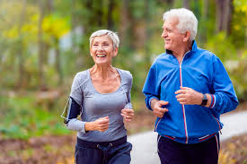

O exercício
Com a chegada da idade, os cuidados aumentam, junto das preocupações com a saúde física e mental. A prática regular de exercícios físicos é fundamental para a qualidade de vida das pessoas, e principalmente a das pessoas que estão na terceira idade.
Porque se exercitar?
•
Fortalece músculos e ossos: Prevenindo quedas e fraturas.
• Melhora a flexibilidade e o equilíbrio: Facilitando as atividades do dia a dia.
• Aumenta a resistência física: Proporcionando mais disposição para as atividades.
• Regula a pressão arterial e os níveis de colesterol: Reduzindo o risco de doenças cardiovasculares.
• Melhora a função cerebral: Estimulando a memória e a concentração.
Combate a depressão e a ansiedade.
Quais exercícios?
• De baixo impacto: Caminhada, natação, hidroginástica, ciclismo, dança, pilates e yoga.
• Fortalecimento muscular: Musculação leve com pesos ou bandas elásticas.

É de extrema importância seguir estas recomendações:
• Acompanhamento profissional: Consulte um médico e um educador físico para montar um programa personalizado.
• Graduação: Comece com exercícios leves e aumente a intensidade gradualmente.
• Diversidade: Varie os tipos de exercícios para evitar a rotina e manter a motivação.
• Adaptação: Os exercícios devem ser adaptados às suas necessidades e limitações.
Lembre-se: A atividade física regular é essencial para uma vida mais saudável e independente na terceira idade. Consulte seu médico e um profissional de educação física para montar um programa de exercícios personalizado.